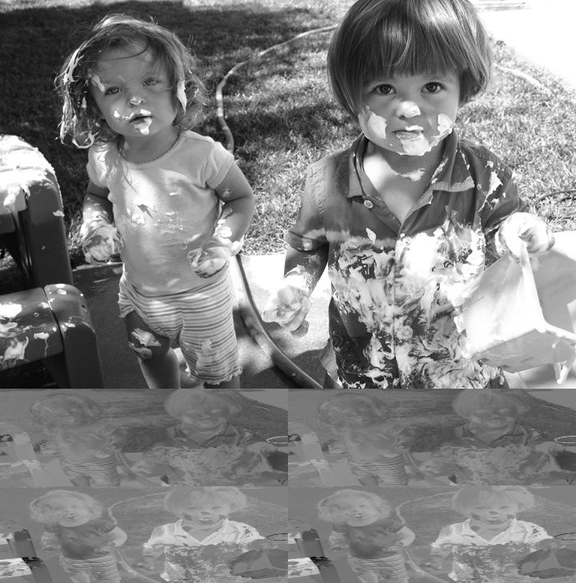
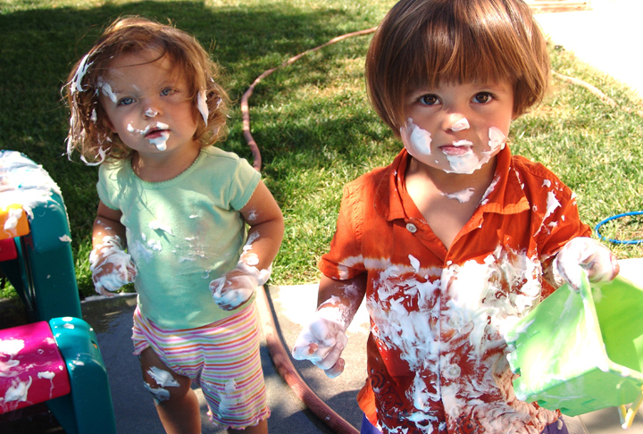

This how to do image colorspace and format conversion in a shader.
Here is the YUV encoded image (treated as an 8-bit greyscale image):

Here is the original image, encoded as a JPEG image:

Here is the O3D plugin loading the YUV image, and converting it to RGB in the shader on the fly.